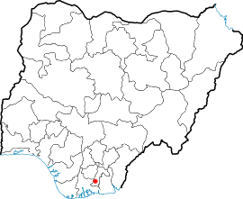
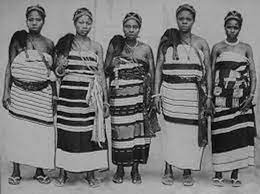

At the end of the 19th century, in Nigeria,
The British colonial administration wanted to take over Nigeria at a lower cost for this, instead of sending British leaders the Governor General of Nigeria, Frederick Lugard, adopted a single system of proxy governance through designated indigenous leaders, replacing previous egalitarian systems.

Problems
But most of the village chiefs took advantage of their new power to terrorize the population by extorting their subjects by imposing unreasonable fines and fees. They seized private property at will and brutalized anyone opposed to their authority. Except in "Iglo" South-East region, leaders were traditionally elected and not imposed for the time their system was highly evolved and egalitarian. They avoided all forms of concentration of power and divided between the groups of the village.
Action
The men of the elite and the settlers in general forcing women into forced labor and confiscating their animals and profits. Women who previously played important roles in political and economic governance were marginalized and expressed their frustration through dances and protest songs in Calabar province.
The last straw was the taxation of women, including taxes on pots, utensils and clothing. Women traders were concerned about the effects of the new tax burden on their businesses and what it would become. They therefore decided to manifest their discontent peacefully by going firmly to the colonial government to preserve their status, but their plea was rejected. Determined to preserve their freedom, they engaged in mistrust by not paying taxes and by turning away any stranger.
It was in this context of distrust that a heated argument broke out between a census officer and a widow. The altercation ended with the assault of the widow. Horrified by this altercation and invoking the custom of women’s protests, those in the town of Okolo invited other women to join them.

Reaction
Coming from different ethnicities and actions multiplied in 1929 in the neighboring regions, over nearly 8,000 km2. For whole nights they sang and danced to conspire with men, to block roads, to destroy the property of indigenous leaders and colonial power, but they did not cause any physical or human damage. The soldiers opened fire, killed unarmed demonstrators and burned the villages as a collective punishment, but the demonstration quickly turned from a peaceful demonstration to the fiercest resistance the British had ever faced in their African colonies. The women of Aba destroyed several British infrastructures, those who pushed the colonial troops responded with great brutality.
25,000 women were involved, a dozen deaths are to be reported, but none on the part of the oppressed, this act of bravery motivated several other minority groups in Africa.
Unfortunately, today, most of contemporary Africa is at odds with these ideas that have ended up getting lost and forgotten…
 25,000 women were involved, a dozen deaths are to be reported, but none on the part of the oppressed, this act of bravery motivated several other minority groups in Africa.
Unfortunately, today, most of contemporary Africa is at odds with these ideas that have ended up getting lost and forgotten…
25,000 women were involved, a dozen deaths are to be reported, but none on the part of the oppressed, this act of bravery motivated several other minority groups in Africa.
Unfortunately, today, most of contemporary Africa is at odds with these ideas that have ended up getting lost and forgotten…